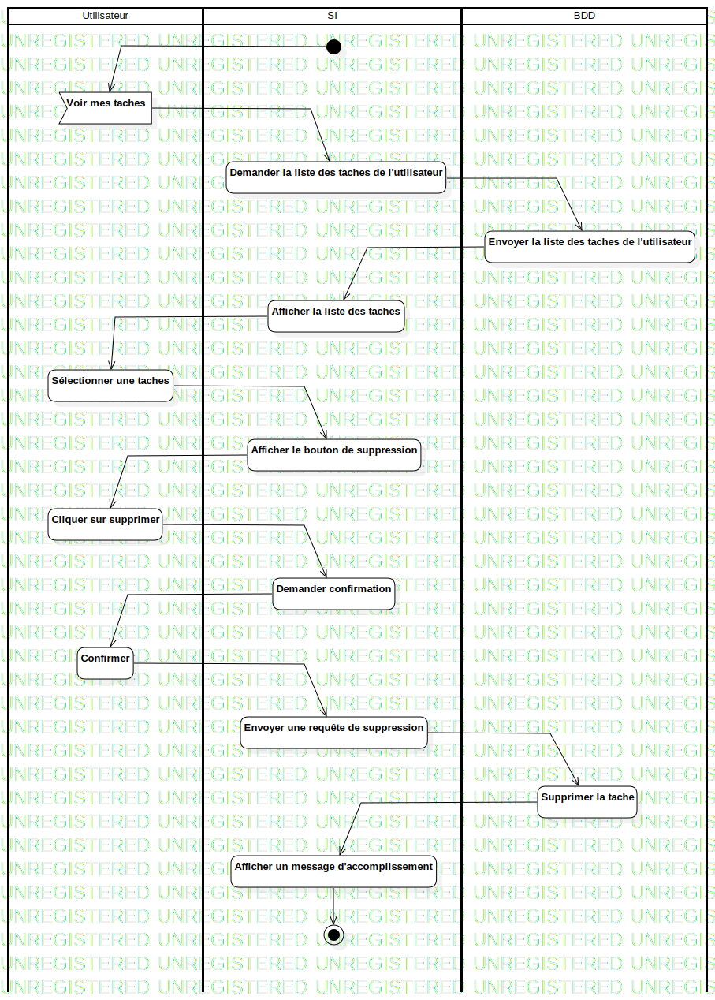

ActD Supprimer une note
UMLActivity
Untitled
::
Note
::
ActD Supprimer une note
Description
none
Diagrams

ActD Supprimer une note
Groups
Utilisateur
SI
BDD
Edges
(InitialNode1→Voir mes taches)
(Voir mes taches→Demander la liste des taches de l'utilisateur)
(Demander la liste des taches de l'utilisateur→Envoyer la liste des taches de l'utilisateur)
(Envoyer la liste des taches de l'utilisateur→Afficher la liste des taches)
(Afficher la liste des taches→Sélectionner une taches)
(Sélectionner une taches→Afficher le bouton de suppression)
(Afficher le bouton de suppression→Cliquer sur supprimer)
(Cliquer sur supprimer→Demander confirmation)
(Demander confirmation→Confirmer)
(Confirmer→Envoyer une requête de suppression)
(Envoyer une requête de suppression→Supprimer la tache)
(Supprimer la tache→Afficher un message d'accomplissement)
(Afficher un message d'accomplissement→ActivityFinalNode1)
Properties
Name
Value
name
ActD Supprimer une note
stereotype
null
visibility
public
isReentrant
true
isReadOnly
false
isSingleExecution
false
Owned Elements
ActD Supprimer une note